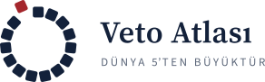
Logo paketi
Ekim 2026
Logolar
Açık zemin sürümleri. Dosyalar boşluksuz kırpılmıştır; çevredeki boşluğu sayfa düzeni verir.
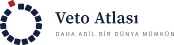
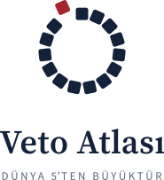
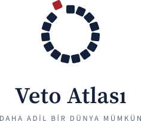
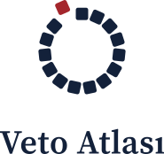
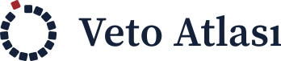
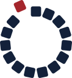
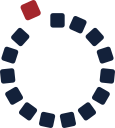
Koyu zemin
Adında -koyu geçen dosyalar. Kırmızı kare ve yazı, lacivert üzerinde okunacak kadar açılmış tonlarla çizilir.
Tek renk
Kaşe, gofre, kazıma, fotokopi ve karışık zeminler için. Kırmızı kare de aynı renge döner ama yerinden ayrılmış hâliyle kalır.
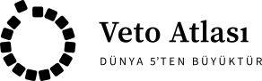
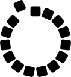
Küçük boyutlar
İşaret her boyutta aynı 15 kareden oluşur. 32 px'in altında kareler birbirine karışmasın diye isaret-kucuk kullanılır: kareler biraz küçük, aralar biraz geniş. Sekme ikonu lacivert zemine oturtulmuştur; açık ve koyu sekme çubuğunda aynı netlikte görünür.

![]()
![]()
Uygulama ikonları ve paylaşım
iPhone ana ekranı, Android uyarlanır ikon maskeleri, bağlantı önizlemesi ve profil fotoğrafları.
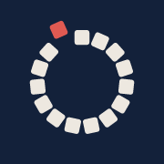
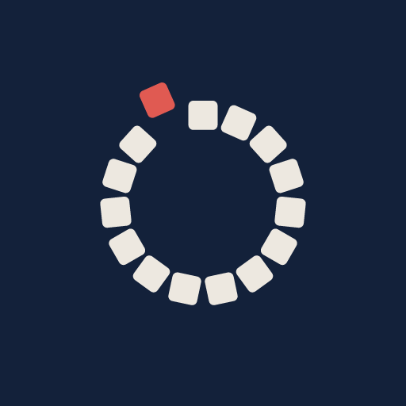
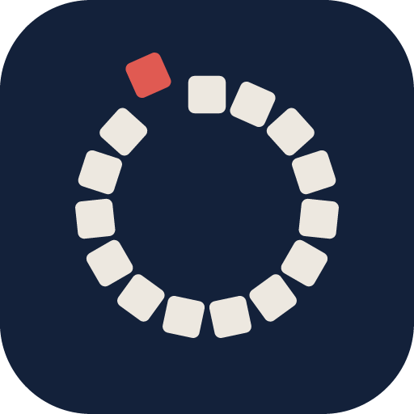
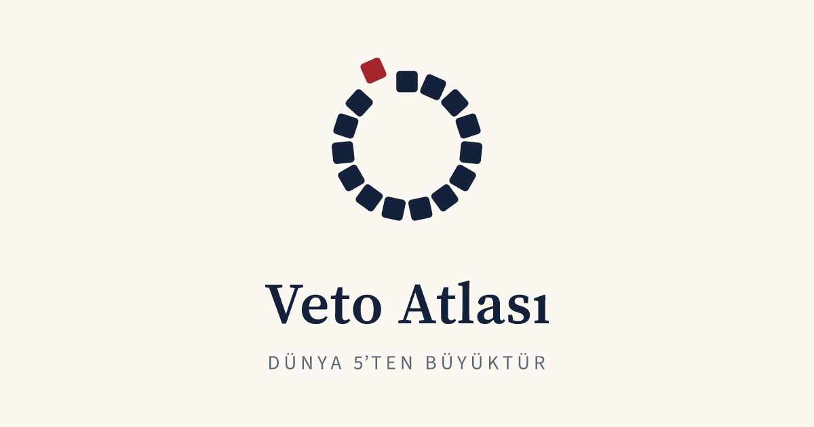
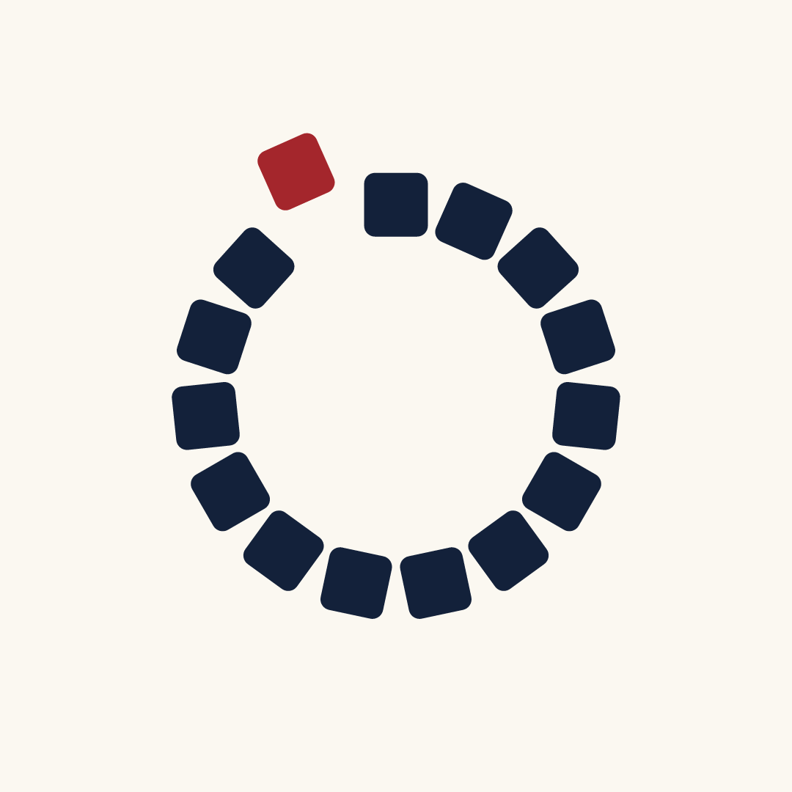
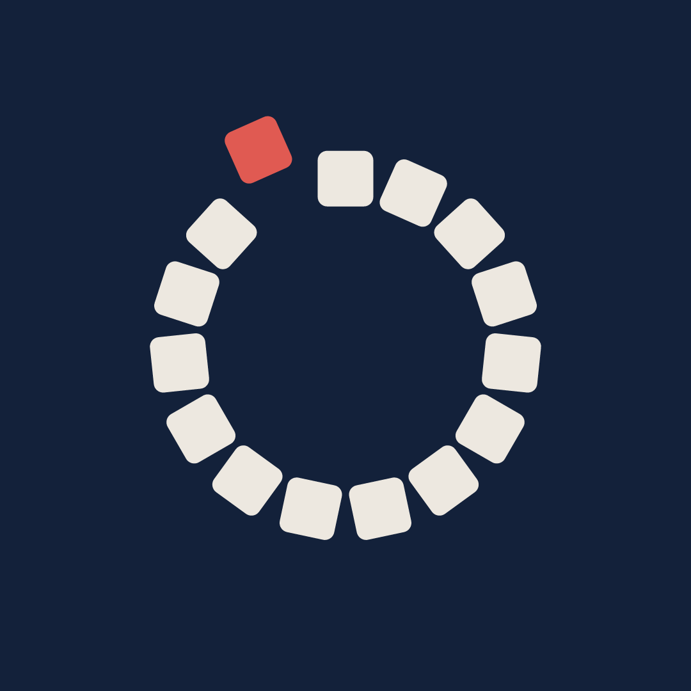
Renkler
Sitenin CSS değişkenleriyle aynıdır. Alt sıradaki tonlar, aynı renklerin koyu zemindeki karşılıklarıdır.